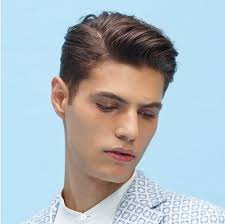
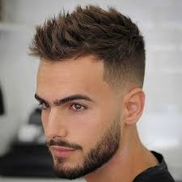
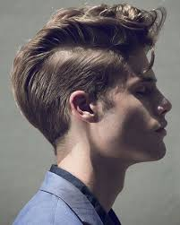
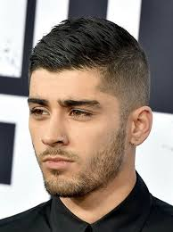

CORTE DE CABELLO HOMBRE
 CORTE TEXTURIZADO, FLEQUILLO LARGO MEDIO Caracterizado por un flequillo mucho más largo que el resto del cabello, pero |
CORTEDE PELO SPIKI O ERIZADO Popular entre los jugadores de fútbol, ya Beckham lucía este estilo hace más de 10 años, |
 CORTE DE CABELLO QUIFF El Quiff es un corte de cabello que no tiene edad y que te dará un aire artístico sin dudarlo. Famosísimo por ubicarse entre estiloso y ordenado, juega con elementos del flattop, pompadour |
CORTE DE CABELLO DESORDENADO Este corte es el típico al cuál nos referimos con look de “recién saliendo de la cama”. |
 MOHICANO O MOHAWK El corte de cabello mohicano es un corte bastante llamativo, que se distingue por dejar el cabello corto en toda
|
 CORTE DE CABELLO CORTO Cortes clásicos, ordenados y formales. Llevar el cabello corto requiere de menos cuidados diarios, pero
|
Nombre
Sexo
Correo Electronico